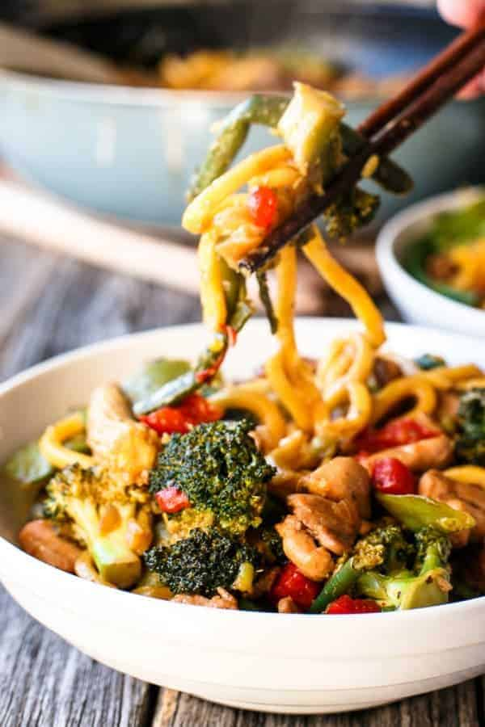

Simple Chicken Noodle Stir Fry Recipe

Ingredients
- 1 tablespoon sesame/peanut oil
- 8 boneless and skinless chicken thighs , cut into 2-inch pieces or strips
- 1 onion , sliced
- 1 whole broccoli , quartered
- 1 cup fresh snow peas , washed and string removed
- 1/2 cup green beans , washed
- 1 red capsicum/bell pepper , de-seeded and diced
- 12 baby corn spears , fresh or canned
- 2 teaspoons minced garlic
- 3 tablespoons oyster sauce
- 2 tablespoons soy sauce
- 1 tablespoon brown sugar
- 1 x 440g | 15oz packet Hokkien Noodles prepared to package instructions prior to cooking (or any other noodle: Udon; Singapore: etc)
Preparation Time
30 Mins
Instructions
- Heat a large frying pan or wok over medium-high heat. Add oil and when hot, fry the chicken in small batches until golden and cooked through (I cook them in three batches). When all the chicken is cooked, add the broccoli, snow peas, green beans, red capsicum/bell peppers and corn spears. Stir fry vegetables until still crunchy on the outside but beginning to soften on the inside. Add garlic, sauces and sugar, and mix to combine.
- AAdd the pre-washed and prepared noodles, and simmer stirring occasionally for 2 - 3 minutes, or until the vegetables have turned bright in colour (cooked but crispy), and the noodles have softened and cooked through.
Return to Main Page